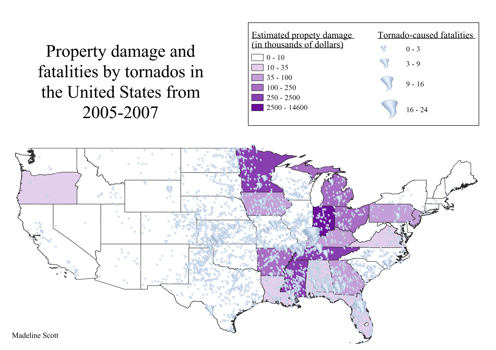

Homework 7: Choropleth and proportional symbol map
Madeline Scott
This map shows two different metrics of the effects of hurricanes. The choropleth displays property damage in thousands of US dollars. The proportional symbol map portrays deaths to humans caused by tornadoes. Although the property damage was missing for some states, we can see a general trend of higher property damage costs occurring alongside higher fatality counts. Data comes from NOAA’s National Weather Service site and contains information from 2005-2007.

Data used for this project
CSV dataset
Data from NOAA's website
Link to GeoJSON